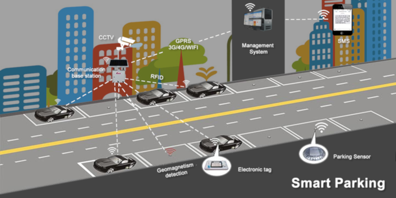
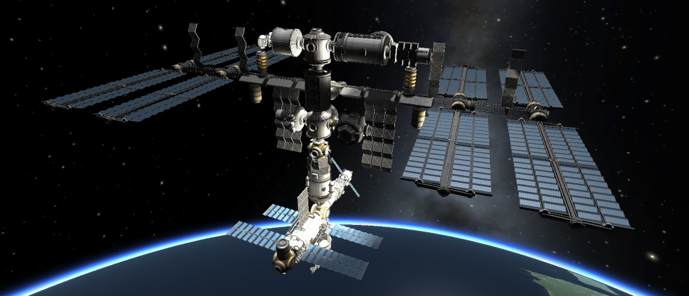
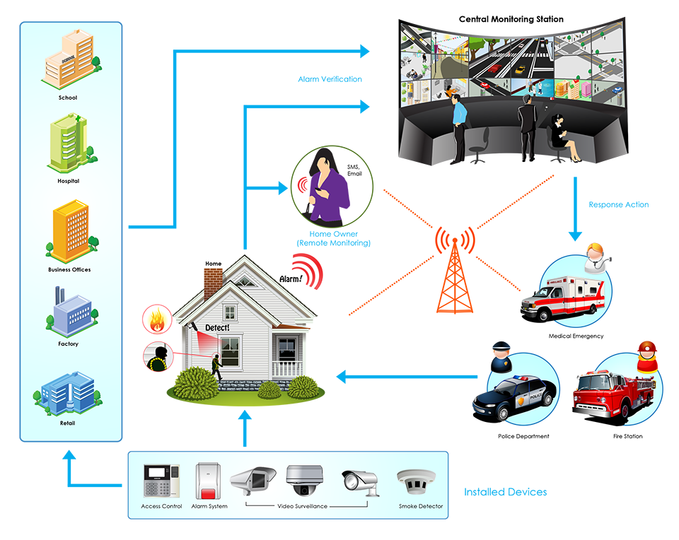
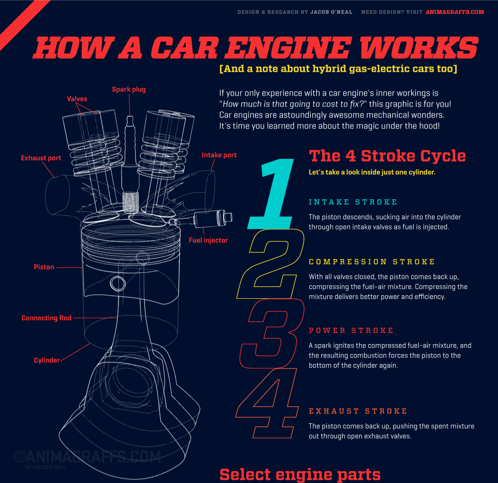
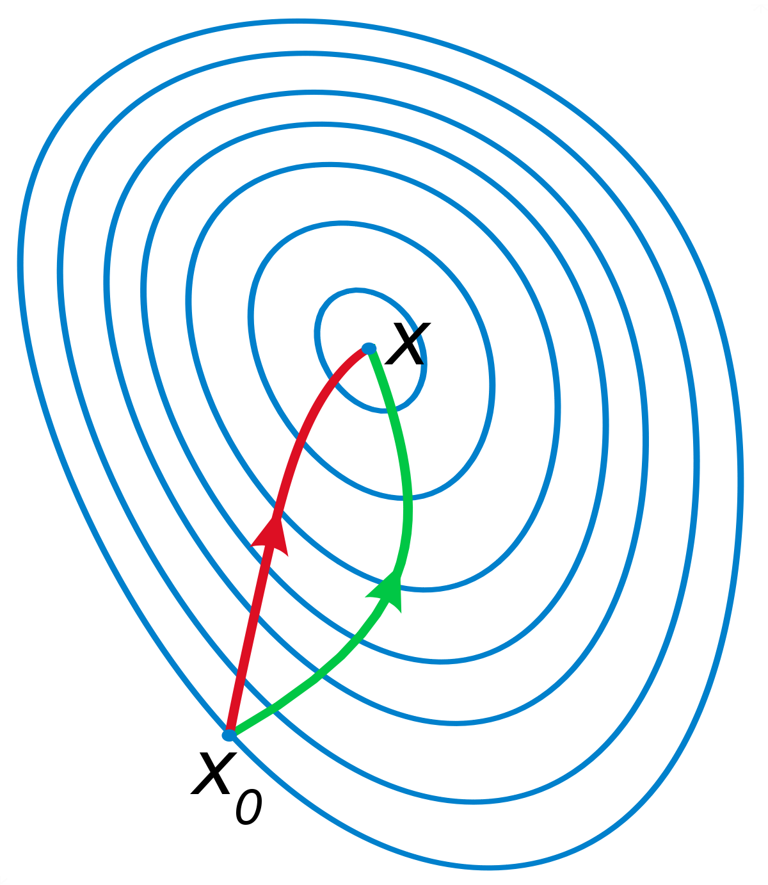
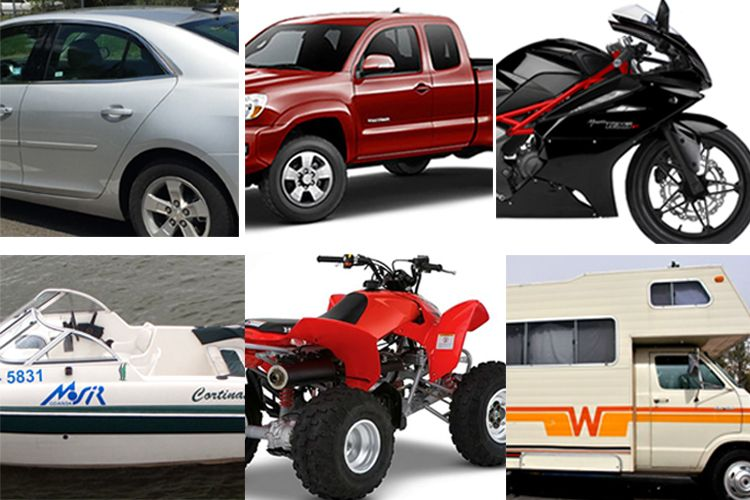

产品系统设计 Product System Design
Table of Contents
1 产品系统设计概述
1.1 系统概念
1.1.1 系统论
核心思想: 整体观
- 古希腊的系统观：部分组成整体
- 贝塔郎菲(Bertalanffy奥地利生物学家)的系统论1940s：相互作用诸要素的综合体
- 《关于一般系统论》
- 《一般系统论基础发展和应用》
1.1.1.1 贝塔朗菲的系统区分
元素的数目、种类、关系
1.1.1.2 系统工程
阿波罗登月计划: 1960s末，耗资300亿美元，42万人、120所大学和研究所、2万家企业参加。
- 共制作近700万个零件，动用600台计算机。

1.1.1.3 系统论思想的作用
- 对分析认识与设计有关的各种因素有很好的指导意义
- 强调综合与创新是其根本目标(对目标把握和对相关要素的认识)

1.1.2 系统定义
- 系统由若干要素以一定结构形式联结构成有某种功能的有机整体。
- 表明要素与要素、要素与系统、系统与环境三方面关系。

1.1.3 产品系统中的人与物
- 人的整体与部分
- 物的整体与部分
1.1.3.1 人的整体与部分
成员承担不同角色,发挥团队优势,完成个体难以企及的任务。
- 工厂同时生产三种产品,可采取两种方法:
- 个: 三个设计师分别设计,结果可能三个产品没有共通之处
- 集: 协同合作寻求共同之处,信息、资源共享,节约时间,提高效率,降低成本。

1.1.3.2 物的整体与部分
- 个: 一件产品可被视为具某种结构和功能个体,即由不同材料和工艺制造部件组成整体。
- 集: 一件产品也可被看作一个由各种要素或子系统构成系统。

1.1.3.2.1 物的系统
- 构成产品要素可以是某个部件或构件,也可以是一个操作系统或元器件。
- 要素品质和组成结构影响系统整体质量。
- 多个不同产品,如在目标诸方面有统一性,可能集成为一个体系。

1.1.3.2.2 物的类别 (种与类)
- 一个类型产品包含各种品种,如家具类产品包含木制品和金属制品等。
- 系列化产品种与类系统关系具体形式。
- 层次分类法:体现产品系统构造中逻辑关系,其相关性明显,依存关系突出。
- 平行分类法:反映系统构造可塑性。

1.2 系统组成
- 系统由多个事物构成有序集合体。
- 系统中各个构成元素相互作用、相互依存。
- 系统通过边界与周围环境相分离,成为特定集合,又通过输入和输出信息与周围环境相联系。

1.2.1 系统组成条件
- 两个以上要素组合而成有一定结构整体,可看成一个系统。
- 条件一:包含至少两个元素;
- 条件二:元素按某种方式相互联系。

1.2.2 系统组成特性
- 相对性：一部机器只是生产系统的一个元素。但从这台机器角度看，各零部件构成一个机器系统。
- 动态性：系统中各个组成部分相互作用和整体发展变化。
- 层次性：系统本身从属更大系统。一个系统可包含若干子系统，子系统也可包含若干子系统等。
1.2.3 系统组织
- 系统组织：要素、结构、子系统、系统层次。
- 系统性质由要素及其相互关系决定

1.2.3.1 系统要素
系统基本成分,系统存在基础
- 产品结构要素：分解产品为零部件，比较零部件功能、结构。
- 产品外观要素：曲线 vs 直线

1.2.3.1.1 产品结构要素
1.2.3.1.2 产品外观要素
1.2.3.2 系统结构
系统内各要素间相互联系作用的方式或秩序 (时空排列组合)。
- 结构保持整体性及功能依据。
- 结构好坏由要素间协调作用体现。
- 矩阵结构、树形结构、网络结构
1.2.3.2.1 矩阵结构
在内部关系不明确情况下、只表示单位与单位间的关系

1.2.3.2.2 树形结构
元素间存在一对多树形关系，分层扩展 (树根->树干->树枝->树叶)。
- 包含从属关系、并列关系。

- 不同车身结构设计生产出两厢和三厢宝来轿车、途安小型MPV、开迪货运车、小型SUV-TIGUAN、速腾、明锐、高尔伏等。
1.2.3.2.3 网络结构
单位间存在概念性相互关系,表示集团或群体存在

包含手机、中继站、卫星传送等要素。
1.2.3.3 子系统
子系统Subsystem可看成一种模块
- 子系统功能由所含元素和模块结构提供。
- 系统每部分应尽可能独立于其它部分。

1.2.3.3.1 子系统设计
在设计中表示构件，封装类行为，通过接口访问功能。为确保子系统在模型中可互换，有以下设计规则：
- 子系统内部元素不可见
- 子系统外部元素不依赖于内部元素;
- 子系统只依赖于元素接口，不依赖于外部模型元素。
- 例：电脑主机由CPU、显卡、硬盘、主板、机箱、电源、光驱、内存等子系统组成。

1.2.3.3.2 系统分为子系统的条件
系统规模太大，元素很多、差异不可忽略
- 分为不同部分，按各自模式组成若干子系统，再合为整系统。

1.2.3.3.3 子系统与元素差异
- 元素也是系统的组成部分，但有基元性 (无需再分)，元素不具系统性，不讨论结构。
- 子系统有可分性、系统性，需讨论结构，对母系统相对独立。

1.2.3.4 系统层次
- 物质层面
- 认识层面
- 行为层面
1.2.3.4.1 物质层面：系统内部秩序
- 系统内部在结构或功能方面形成层级（对复杂系统处理的基本方法）。
- 层次有多样性,可按系统质量、能量、运动状态、空间尺度、时间顺序、组织化程度等划分。
- 例：产品质量等级分为合格品 (一等品、二等品等) 和不合格品 (次品和废品)

1.2.3.4.2 认识层面：对系统阶段性认识反映
- 认识和表达事物思维过程在系统认识与理解中的反映,体现人们对系统认识发展步骤。
- 同一系统,可有不同层次划分。
- 例：人的需求分生存、享受和发展三个层次，取决于生产力水平和经济制度（马克思和恩格斯）。
- 例：人的需求有七个层次: 生理->安全->归属和爱->自尊->求知->审美->自我实现（马斯洛）。

1.2.3.4.3 行为层面：对系统的组织和规划
通过对系统层次划分、组织和规划,实现对系统高效管理、运行和维护。

1.2.4 产品系统构成
- 产品系统与任何系统一样,宏观由物质、能量和信息构成。
- 存在方式和属性上表现为要素、结构和功能因素。
1.2.4.1 产品系统构成之要素
一个产品包括功能、结构、材料、工艺、色彩、纹理和界面等要素。
- 各个不同产品也会组成系统,这里产品就成为子要素和子系统。

1.2.4.2 产品系统构成之结构
若干要素相互联系相互作用方式
- 结构对系统内在关系综合反映,系统保持整体性及有一定功能内在依据。

1.2.4.3 产品系统构成之功能
系统与外部环境相互联系和作用的过程秩序及能力称为系统功能。
- 系统功能体现与外部环境间物质、能量和信息输入与输出的变换关系。
- 外部环境包括用户使用情景、生态保护、社会文化、经济发展和技术支撑等。
- 系统功能发挥,受环境变化和系统内部结构制约。
- 系统与环境相互作用演化,有可能使系统改变或失去原有功能。

1.2.5 产品系统与环境
系统通过边界与周围环境相分离而成为一种特定集合
- 通过输入和输出物质、能量或信息与周围环境相联系。输入与输出间的转换过程即系统作用。
- 系统不孤立存在,总与周围事物发生关系。系统接受环境影响(输入),同时对环境施以影响(输出)。

1.2.5.1 系统功能
- 系统在运行过程中所有效用(用途)和表现出的能力(性能指标)。
1.2.5.1.1 产品功能
做什么用 (以功能命名, 如剃须刀、菜刀、理发剪、指甲剪)
- 功能失效须修理,否则报废。
- 功能减弱、功能不足、功能过时促使产品淘汰。

1.2.5.1.2 功能是一个过程
体现系统对外部的作用能力 (三要素: 输入、输出和转换)
- 由系统内部结构决定，由系统整体运动表现，系统内部固有能力的外部体现。
- 功能发挥受(1)内部结构制约和决定 (2)环境变化制约

1.2.5.2 系统环境
- 系统之外所有事物或存在称为该系统环境。
- 环境是系统存在的外部条件。环境对系统性质起一定支配作用。
- 系统整体性在系统与环境相互联系中体现。
- 系统和环境间通常有物质、能量和信息交换。
1.2.5.3 产品设计与环境
- 产品设计与自然环境
- 产品设计与社会环境
- 产品设计与技术环境
1.2.5.3.1 产品设计与自然环境
包括资源、生态和地理环境
- eco-friendly products

1.2.5.3.2 产品设计与社会环境
包括社会制度、民族文化、国际关系等
- 高科技产品会给社会带来深刻影响,社会因素也对产品生产或使用发生促进或制约效果。
- 现代产品大量参与国际市场竞争,市场环境成为产品开发重要因素。
- 产品对象是人，消费观念对产品发展起导向作用。

1.2.5.3.3 产品设计与技术环境
包括设施环境和协作环境
- 设施环境：飞机地面导航系统、船舶卫星定位系统、高速公路和加油站成为汽车运行基础设施。
- 协作环境：周边技术协作,如材料与燃料供给,废弃物回收等。

1.2.5.3.4 例：厨房吸油烟机产品系统环境
在烹饪时会有油烟污染厨房
- 吸油烟机主要功能将厨房油烟排到建筑物外。
- 对大环境而言,吸油烟机需改进,使油烟在排到室外之前被过滤。
1.3 系统属性(特征)
1.3.1 整体(涌现)性
- 所有组分构成统一整体,有整体结构、特性、状态、行为、功能等。
- 系统要素相互联系和作用,形成有机、协调整体，或有涌现性(突现性)产生。
- 例：单个物质分子没有温度、压强,大量分子聚集为热力学系统,就有可用温度、压强表示整体属性。
- 例：单个轮子不可骑，而单轮车表现出可骑性质称为系统整体涌现。
1.3.1.1 涌现特征
- 结构涌现
- 层次涌现
1.3.1.1.1 结构
不同结构方式,即组分间不同相互激发、相互制约方式,产生不同整体涌现性。
- 例：同样原子成分按不同自构方式经过化学反应形成性质不同分子。
- 例：由同样成员组成企业按不同方式组织和管理,可产生截然不同生产效益。
- 整体属性取决于组分特性。并非任意元素经组织、整合就能产生某种整体涌现性。
1.3.1.1.2 层次
复杂系统通过一系列中间等级整合逐步涌现。
- 每个涌现等级代表一个层次,每经一次涌现形成一新层次,
- 从元素层开始,由低到高逐步组合发展形成系统整体层次。
- 可将复杂事物按层次分解为若干简单事物组合。

1.3.1.2 产品设计的自组织性
产品设计系统由内部及系统与环境交叉作用结果。
- 市场调查、需求分析和设计定位等组成元素环环相扣,组成一个牢固系统,
- 这些元素相互依存,若其中一个元素没发挥好应有作用,便会影响到与之相关其它元素所工作。
- 组成元素动态关联体现其自组织性。

1.3.2 有序关联性
系统中各层次结构有秩序地工作
- 所有元素或组分按该系统特有方式彼此关联、作用、激励、补充和制约。
- 按一定规律（规则、重复和因果关联性）体现时空状态：矩阵、树形、网络结构

1.3.2.1 产品设计的层次性
在不同技术、文化背景下,针对不同设计解决方案可能呈现不同元素层次优先级。
- 例：产品造型质量评价（功能因素、物质因素、美学因素）
1.3.3 动态稳定性
- 内部诸要素作用产生惯性,显现出动态平衡,维持稳定性。
- 当稳定性破坏,或系统构造有问题时,系统功能无法正常发挥。
- 稳定状态相对,运动状态绝对,在各种(不)正常输入与干扰信号下运动。

1.3.3.1 例：移动通讯系统
在网络作用下,系统各要素按某种秩序形成整体,要素间保持依存关系,且这种关系稳定、相互作用。
- 当手机需求量增加,移动通讯系统随之扩容,负载能力加强,反过来又会促进系统结构趋于优化。
- 无论哪个环节发生变化,其它环节必然与之相适应。这就是系统内部通过涨落保持稳定。

1.3.3.2 产品设计的动态开放性
- 设计为审美、使用习惯、行为方式和文化背景不同且不断更迭的人们提供解决方案。
- 开放性:接受新理念、新知识
- 动态性:消化新元素,满足新要求

1.3.4 其它属性
- 目的作用：由各元素、子系统协同完成特定功能。
- 反馈机制：据系统输入情况,从内部机制或外部因素改变控制过程,以改善系统输出。
- 规模效应：规模大小不同(要素数目和结构复杂程度)带来系统性质差异。
- 多元特征：系统多样性统一、差异性统一 (系列化产品设计)。
1.4 系统分类
1.4.1 自然-人工系统
自然系统:
- 宇宙星系、银河系、太阳系、自然生态系统（湿地）
人工系统:
- 人工物质系统: 人对自然物加工而获得的系统(城市交通、机械系统、控制系统、人机系统等)。
- 社会系统: 一定历史条件下,人们组成社会系统。
- 理论系统: 对自然与社会认识而建立理论体系。

1.4.2 简单-复杂系统
简单系统（线性）：
- 自然界中非生命事物及规律抽象成一种简单、受有限因素影响,能被还原和重复的系统。
- 例：微积分、牛顿力学、理想气体、机械结构(自行车转向系统)、电路系统。
复杂系统（非线性）：
- 耗散结构 (远离平衡的开放系统) 在与外界交换物质能量过程中，由非线性动力学机理,自动从无序形成并维持在时空或功能上的有序状态。
- 例：细胞、生物体、社会组织、生态系统。

1.4.3 开放-闭式系统
- 开放系统(open system): 与环境间既有能量交换又有物质交换的系统。
- 封闭系统(closed system): 与环境间只有能量交换而无物质交换的系统。
- 隔离系统(isolated system): 与环境间既无能量交换又无物质交换的系统(理想状态, 例：密闭储罐)。

1.4.4 静态-动态系统
静态系统：
- (控制)特性固定不变的运动系统(发动机运行)

动态系统：
- 由多种变量或参数构成，变量相互联系，并处在恒动中(例：城市交通系统或森林生态系统)

1.4.5 产品设计系统分类
- 平面产品设计: 图书、宣传册、卡片、招贴等
- 立体产品设计: 交通工具、家用电器、电子产品等
- 交互产品设计: 物联产品、机器人等
- 服务产品设计: 交通、医疗、社区服务系统设计(软硬件开发)
1.4.5.1 产品系统设计层次
- 外观设计：以外形整体及局部线条、图案、色彩、雕刻装饰设计为主。
- 造型设计：以内在结构和外在造型为研究对象,提出较全面设计方案。
- 详细设计：对功能、结构、造型、交互界面全面系统研究,明确定义功能,合理配置结构,对造型提出符合功能要求和消费倾向便于使用形式,对产品提出新系统设计方案。
- 工业设计：包括产品本身及包装、商标及展示提出富有创意新设计方案。
- 广义工业设计：对产品、对商品销售、对传媒、对企业形象、对产品品牌、对产品策划提出全面富有创意新设计方案。
- 人为事物设计：对人类各种需研究,对人类环境、居住、生活、学习、工作、服务、娱乐、体育、旅游、休闲、盛会提出全面富有创意新设计方案。
1.5 设计系统观
设计概念和领域不断扩大及系统观念强化,现代产品设计已将对象事物当作一个整体系统认识和研究
- 从全局出发,将各组成部分看作子系统或要素
- 通过整合,建立有机联系及系统与环境间有机关系

1.5.1 产品系统设计时空观
1.5.1.1 多种构成(空间)
- 把设计对象及有关问题,设计信息分类整理、设计目标拟定、人—机—环境系统功能分配、功能-结构-造型协调等视为系统
- 用系统方法分析和综合处理。
1.5.1.2 动态变化(时间)
产品设计一个由多要素和多方法构成的过程系统,需考虑从产品诞生到消亡整个生命过程。
- 产品设计过程是一个动态开放与外部环境（市场）交互过程：从产品战略到市场营销。
- 产品战略->基础研究->市场调查->产品企划->产品开发->产品设计->技术开发->生产->营销->回收再利用
- 经多个环节,产品要素不断变化和调整,形成动态设计系统。
1.5.2 产品系统设计的意义
- 专注整体与部分 (整体性) 及与外部环境 (综合性) 间相互关系,
- 找到处理问题最佳或最适合方法 (优选性)。

1.6 产品系统化特征
1.6.1 产品信息化促进系统化
- 信息本身已成为重要产品,实体产品强化为信息载体。
- 信息化已全面融合到产品生命周期中,从产品设计生产到推广销售和售后服务。
- 产品特征信息化 | 产品设计信息化 | 产品制造信息化与智能化
1.6.1.1 产品特征信息化
- 多功能复合化
- 便携化
- 智能与知识化
- 精神化

1.6.1.1.1 多功能复合化
随电子信息技术发展,改进产品结构和零部件电子元器件组成,扩大同一产品功能及使用范围。
- 例：集收、录、唱、视于一体家庭影院,在扩大功能同时利用数字技术提高产品效果和精度。
- 例：集复印、扫瞄、存储、打印为一体复合式办公设备。
1.6.1.1.2 便携化
电子元器件大量应用及信息技术发展,使产品结构改良,零部件数量减少,体积缩小,重量减轻。
- 产品便于操作、携带,运输及安装,同时节约能源和资源,降低成本。
- 1) 电子元器件替代部分机械零部件
- 2) 新材料支持。如,轻薄、高强度钛合金、工程塑料
- 3) 信息技术应用和计算机辅助设计与制造、精密机床、激光切割、亚微米刻蚀等技术

1.6.1.1.3 智能与知识化
把人们通过学习才能掌握知识和技术转化到产品中
- 各类智能产品: 自动吸尘器、送餐机器人、儿童学习机器伴侣。
1.6.1.1.4 精神化
对品味追求, 包括美学价值和象征意味等精神文化价值。

1.6.1.2 产品设计信息化
- 网络化协同设计
- 信息设计技术支撑
1.6.1.2.1 网络化协同设计
- 串行设计:
- 开发->设计->样品试制->修改设计->工艺准备->试生产->生产
- 并行设计:
- 初期就由开发设计人员、质量控制人员、生产制造人员、营销人员、协作厂家及用户代表等协同工作。
1.6.1.2.2 信息设计技术支撑
- 计算机辅助设计与制造
- 逆向工程
- 快速成型技术
- 虚拟制造与虚拟产品开发
- 全面质量控制体系
- CAD (Design) | CAE (Engineering) | CAPP (Process Planning) | CAM (Manufacturing)

直接从模型或实物获得几何数据,转化成零件图纸和加工程序。
- 将手工产品、甚至艺术品在短时间内加以复制,批量生产。

在CAD/CAM技术支持下,采用粘结、熔结、聚合作用
- 或化学反应等手段, 有选择地固化液体材料,快速制作出所需形态零部件。

以计算仿真、智能推理和预测为基础,对制造信息动态操作,虚拟制造过程和产品及消费或损耗过程。
- 以真实制造信息驱动虚拟设备,加工出虚拟却贴近实际的产品。
- 通过先进传感技术和声像技术,构成身临其境人机界面,提供虚拟消费,或提交虚拟试验与分析。
- 与实际制造比较,具安全性、经济性和速效性。

计算机收集整理用户对产品质量需求,转变成生产时间、成本、性能值,以此调整生产系统,指导设计。
- 确保顾客和市场反馈信息精确转移到产品开发每个阶段有关技术和措施中去。
- 确保使用性能前提下,减少冗余功能,降低成本,提高质量和延长寿命,使产品尽可能无维修,零件适时报废或回收利用。
1.6.1.3 产品制造信息化与智能化
- 信息化促成精益生产、敏捷生产和柔性生产方式
- 自动化机器生产机器、控制机器
1.6.1.3.1 信息化促成精益生产、敏捷生产和柔性生产方式
应对个性化需求和复杂精细、功能多样产品制造要求。
- 精益生产：消除品种切换、产能不足或过剩浪费。
- 柔性生产：精益生产组成部分,高度适应市场需求变化,通过数控机床等通用设备方便品种切换。
- 敏捷制造：以市场为导向,组织企业生产,并保持产品开发技术领先。

1.6.1.3.2 自动化机器生产机器、控制机器
计算机技术广泛应用于设计开发系统、生产系统及管理系统。
- 工业化使人肢体得以延伸,信息化使人大脑得以延伸,使人们从一部分脑力劳动中解放出来。
1.6.2 产品系列化促进系统化
相互关联成组、成套产品
- 系列化形式：品牌系列、成套系列、单元系列
- 系列化意义：商业意义、生产意义
1.6.2.1 系列化形式
品牌系列 | 成套系列 | 单元系列

1.6.2.1.1 品牌系列
- 例：同一品牌家用电器

1.6.2.1.2 成套系列
由多种独立功能产品组成一个产品系统。
- 例：成套办公产品,既有各自功能,又组成完整办公系统。
1.6.2.1.3 单元系列
单元产品间有某种相关性和依存关系,构成完整产品系列。
- 例：母子电话机、儿童手表与父母手机相连等。
1.6.2.2 系列化意义
- 产品系列化的商业意义
- 产品系列化的生产意义
1.6.2.2.1 产品系列化的商业意义
通过增加产品覆盖面和提高产品适应性来提高市场竞争力。
- 系列产品以多变功能或要素组合,适应多极市场格局和快速变化市场需求。

1.6.2.2.2 产品系列化的生产意义
柔性生产：
- 灵活多样地小批量生产多种产品或定制单件特种产品。
- 随用户需求变化和产品改进,开发重新组合换代产品,无需全新产品替代老产品。
- 跨地域、跨行业分工协作模块化生产。如航空器。

刚性生产：
- 设计出系列标准模块,成套设备大批量刚性生产
- 降低生产成本、存贮费用、用户耗费维护和修理费。
- 例：电气开关和插座,通过标准组件不同组合方式形成不同规格和功能产品。

1.6.3 产品商品化促进系统化
企业为谋求生产系统快速反应市场变化,打破生产和营销分离状态。
- 生产企业调整组织结构、管理体制及工作方式;
- 向产品设计、制造、流通、市场连接紧密化、一体化方向努力。
- 由商品化发展到服务化系统设计。

1.6.4 产品生态化促进系统化
生产制造业已成为大量废弃物(包括物料废弃物、能源废弃物和产品使用终结废弃物等)主要源头。只用见污治污未端治理方式不能从根本上解决污染问题,需从绿色设计入手。
- 1) 立足产品或产品部分可重复使用
- 2) 立足产品或产品部分可回收翻新多次利用
- 3) 产品在使用寿命完结时可安全地处理
- 绿色产品在生命周期全程中,符合环保要求,对环境无害或危害极少,资源利用率高,能源消耗低。
- 绿色设计(生态设计)着重考虑产品环境属性,即可拆卸、可回收、可维护、可重复利用等特性,
- 并确保产品应有功能、使用寿命和质量。
1.6.5 产品多元化促进系统化
市场需求趋于多样化、个性化,开发采用新技术、新材料、新结构或新形式全新产品。
- 满足不同年龄、性别、文化消费需求

1.7 作业一
- 找一个产品系统实例做成PPT。
- 反映您对产品系统设计的整体认识，或系统某(几)方面的内容，甚至提出自己对系统的看法。
- 9月1日(周日)23:00前发送到anhongz@outlook.com
- 文件名: PSD1-标题-姓名
- 文件类型: 演示文稿或PDF文档